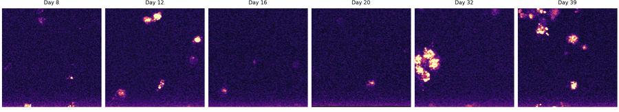

M05_ROI005
M05 / PLD3_mCherry_reporter_control
Manual identity status: uncertain_identity
Pass days: 8|12|16|20|32|39
Review days: 25|29|36
Excluded days:
Common-overlap crop: x=1254:1446, y=2676:2868

mCherry metric summary rows 6 mean_puncta_count 7.833 mean_punctate_mean_intensity 166.5 mean_diffuse_mean_intensity 23.88 mean_diffuse_to_punctate_ratio 8.17 mean_punctate_fraction 0.1431 mean_diffuse_fraction 0.8569 valid_rows 6
Colocalization summary rows 6 mean_manders_a_in_b 0.278 mean_manders_b_in_a 0.03499
Warnings: channel_a_possible_saturation_or_clipping
Crop path Large microscopy file stored locally/shared drive
Metadata LOCAL_PROCESSED_OUTPUT/full_mcherry_valid_defg_pass5/wells/M05/neuron_rois/M05_ROI005/M05_ROI005_metadata.json
mCherry metrics LOCAL_PROCESSED_OUTPUT/full_mcherry_valid_defg_pass5/wells/M05/neuron_rois/M05_ROI005/M05_ROI005_mcherry_metrics.csv
Colocalization metrics LOCAL_PROCESSED_OUTPUT/full_mcherry_valid_defg_pass5/wells/M05/neuron_rois/M05_ROI005/M05_ROI005_colocalization_metrics.csv
Preliminary output. Requires manual ROI identity review before biological interpretation.
Back to well viewer
ROI Candidate Review Viewer
This ROI is a candidate neuron track, not a confirmed same-neuron identity until manually reviewed.
This ROI candidate was generated from the overlap-only common-overlap stack when pass5 source metadata points to registered_common_overlap.
Montage fallback. Per-day ROI frame PNGs were not found in the dashboard-safe assets, so no ROI video is shown.
Parent well M05
ROI ID M05_ROI005
Condition PLD3_mCherry_reporter_control
Manual identity uncertain_identity
Review status options confirmed_same_neuron, uncertain_identity, lost_or_dead, poor_registration, exclude
Output level overlap_only_analysis
Overlap source label overlap-only/common-overlap source
Well retained overlap 55.6%
Inherited alignment QC manual_alignment_needed
Full-registered crop box x=126:1722, y=0:2868
Traceability Overlap crop is stored in registered-frame coordinates. Per-day original-space mapping requires applying the inverse registration shift for each day.
mCherry summary puncta 7.83; punctate fraction 0.143; diffuse/punctate 8.17
Colocalization summary Pearson 0.159; Manders A-in-B 0.278; B-in-A 0.035
Warnings channel_a_possible_saturation_or_clipping
Review instruction: confirm same-neuron identity before biological interpretation; leave uncertain candidates as uncertain_identity or mark poor-registration/exclude in the working review CSV.
Back to well viewer